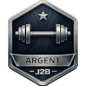

L'application vous accompagne à chaque étape du cycle de musculation. Elle est conçue pour fonctionner depuis votre smartphone ou votre tablette pendant le cours d'EPS, en salle de musculation.
Le déroulement est toujours le même :
- 1Connexion — Choisissez votre classe, votre nom et entrez votre mot de passe.
- 2Maxis (1RM) — Renseignez votre charge maximale sur chaque atelier.
- 3Choix du projet — Choisissez votre objectif de travail pour le cycle.
- 4Séances — L'application vous guide atelier par atelier pendant le cours.
- 5Badge — À chaque séance, obtenez un badge selon votre nombre d'ateliers validés.
En appuyant sur l'icône ☰ en haut à droite de l'écran, un menu s'affiche avec les options suivantes :
- 🌙Thème sombre / clair — Basculez l'affichage entre le fond sombre et le fond clair selon votre préférence. Ce choix est mémorisé d'une session à l'autre.
- 📖Lexique — Consultez le vocabulaire de la musculation organisé par thème (anatomie, physiologie, entraînement…), avec une barre de recherche.
- 🦴Anatomie — Accédez au schéma musculaire et aux fiches descriptives de chaque groupe musculaire sollicité dans les ateliers.
- ❓Guide d'utilisation — Ce document.
- ↩Se déconnecter — Termine la session et revient à l'écran de connexion.
- 1Sélectionnez votre classe dans le menu déroulant.
- 2Sélectionnez votre nom dans la liste.
- 3Saisissez votre mot de passe (6 à 10 lettres minuscules, sans accent). Lors de votre première connexion, vous créez votre mot de passe — retenez-le.
- 4Appuyez sur Entrer.
Le 1RM (1 Répétition Maximale) est le poids maximum que vous pouvez soulever une seule fois dans une exécution correcte. C'est votre référence personnelle pour calculer les charges de travail adaptées à votre niveau.
Sur la page Maxis, cliquez sur un atelier pour renseigner votre maxi. Deux méthodes sont disponibles :
Utilisez les roulettes pour indiquer le poids que vous avez soulevé et le nombre de répétitions réalisées. L'application calcule votre 1RM théorique grâce à la formule de Brzycki. Appuyez ensuite sur Valider ce maxi.
Si vous aviez déjà renseigné un maxi pour cet atelier, il est rappelé en haut de la page sous le nom de l'atelier : Maxi actuel : XX kg.
Les consignes d'exécution et les règles de sécurité de l'atelier sont affichées sous la formule pour vous guider pendant la recherche de maxi.
Si vous connaissez déjà votre maxi, basculez sur l'onglet Saisie directe et entrez la valeur.
Banc à Lombaires / Abdo Sol — Indiquez le poids additionnel (0, 2, 5 ou 10 kg) que vous pouvez utiliser pour 30 répétitions en 1 minute.
Gainage sol — Sélectionnez votre niveau de 1 à 4.
Choisissez un seul projet pour tout le cycle. Ce choix détermine l'intensité, le nombre de répétitions et le temps de récupération qui vous seront proposés pendant les séances.
Pour améliorer votre puissance et explosivité. Idéal si vous pratiquez un sport. Séries courtes (4–8 reps) à haute intensité (80–90% du maxi). Récupération : 3 à 6 minutes.
Pour développer le volume musculaire. Séries longues (10–20 reps) à intensité modérée (65–80% du maxi). Récupération : 1min30 à 2min30.
Pour affiner la silhouette et dépenser de l'énergie. Séries très longues (25–35 reps) à faible intensité (40–50% du maxi). Récupération : 30s à 1 minute.
Pour entretenir et raffermir les muscles. Séries moyennes (15–25 reps) à intensité modérée (50–65% du maxi). Récupération : 30s à 1min30.
Consultez le détail de chaque projet en cliquant dessus, puis appuyez sur Choisir ce projet.
La page Séance liste tous les ateliers disponibles. Appuyez sur un atelier pour ouvrir sa page dédiée. Effectuez vos 4 séries et indiquez votre ressenti après chacune. Répétez sur au moins 5 ateliers pour obtenir un badge.
En appuyant sur un atelier, vous accédez à sa page complète. Elle contient dans l'ordre :
- 1Le nom de l'atelier avec les muscles sollicités en dessous.
- 2Votre maxi (1RM) et votre nombre de validations.
- 3La dernière validation à cet atelier — vos 4 séries de la fois précédente avec les charges, répétitions et ressentis. Utile pour calibrer l'effort du jour.
- 4La grille de vos séries du jour avec les suggestions de l'application.
- 5Le chronomètre de récupération (entre chaque série).
- 6Les consignes d'exécution et les règles de sécurité.
- 7Un lien vers la vidéo de démonstration (si disponible).
Si vous avez déjà travaillé cet atelier lors d'une séance précédente avec le même projet, l'application affiche vos 4 séries : charge × répétitions et ressenti, chaque ressenti étant représenté par un petit carré coloré :
La série mise en rouge dans cet historique est celle qui sert de référence pour la proposition de votre première série du jour — c'est votre meilleure série D (la plus lourde), ou à défaut votre TD le plus léger.
Cet encadré n'apparaît pas si la validation date de la séance en cours, ni si elle a été faite avec un projet différent.
Après chaque série (S1, S2, S3 uniquement), un chronomètre se déclenche automatiquement selon votre projet :
- Projet 1 — Sportif : 3 minutes
- Projet 2 — Esthétique : 1 min 30
- Projet 3A — Santé Endurance : 45 secondes
- Projet 3B — Santé Tonification : 1 minute
Le chrono passe au vert dans les 5 dernières secondes, puis continue en rouge négatif si vous dépassez le temps. Appuyez sur Passer → pour l'ignorer et enchaîner directement. Il ne s'affiche pas après la 4ème série puisque l'atelier est terminé.
- 1L'application affiche une 💡 Proposition pour Série 1 : charge et répétitions calculées selon votre projet et votre maxi. Si une séance précédente existe (même projet), la S1 est pré-remplie avec votre meilleure série D de la dernière fois — celle mise en rouge dans l'historique.
- 2Si besoin, modifiez les paramètres via le bouton ✏️ Modifier. La roulette des poids affiche le % du maxi en regard de chaque charge pour vous aider à choisir.
- 3Réalisez la série, puis indiquez votre ressenti en appuyant sur le bouton correspondant.
- 4La suggestion pour la série suivante apparaît. Si l'application propose de modifier la ↑↓ Charge ou les ↑↓ Reps, appuyer sur ce bouton applique directement la modification — sans étape de confirmation supplémentaire.
- 5Le chronomètre de récupération se lance (S1, S2 et S3 uniquement).
Vous avez réussi mais c'était à la limite. La charge est parfaitement adaptée.
Vous auriez pu faire beaucoup plus. L'application va augmenter la charge.
C'était dur mais vous avez réussi. L'application ajuste légèrement.
Vous n'avez pas réussi à finir la série. La charge et/ou le nombre de répétitions seront réduits.
Pour ces ateliers, il n'y a pas de charge à régler. Après chaque série, indiquez simplement Ok si vous avez réussi, ou Échec si vous n'avez pas pu terminer.
Après 4 séries réussies, l'atelier est validé. Un message "Bravo ! Atelier Validé !" s'affiche. Sur la page Séance, la carte de l'atelier passe en bleu pour indiquer qu'il a été fait dans cette séance.
- 2 fois Facile d'affilée — votre maxi est probablement sous-évalué.
- 2 fois Échec d'affilée — votre maxi est probablement surévalué.
- Plafond absolu atteint avec ressenti F — vous êtes à la charge maximale ET aux répétitions maximales de votre projet, et vous trouvez ça facile : votre maxi est clairement sous-évalué.
- Plancher absolu atteint avec ressenti E — vous êtes à la charge minimale ET aux répétitions minimales de votre projet, et vous êtes en échec : votre maxi est clairement surévalué.
Dès que vous avez validé 4 ateliers ou plus, le bouton "✅ Terminer ma séance" apparaît en haut de la page Séance. Appuyez dessus, puis confirmez pour valider votre bilan et recevoir votre badge.
Après confirmation, un bilan détaillé s'affiche avant votre badge. Pour chaque atelier travaillé, vous voyez :
- Les 4 carrés de ressenti dans l'ordre des séries (mêmes couleurs que dans la fiche d'atelier).
- La meilleure série TD ou D avec la charge et les répétitions.
- Une flèche ↑ si vous avez progressé, ↓ si vous avez régressé, = si stable — par rapport à la séance précédente avec le même projet.
- Un badge 🔄 nouveau maxi si l'application vous a redirigé vers un recalcul de maxi sur cet atelier.
Meilleure série TD ou D · ↑↓= vs séance précédente

Argent — 5 ateliers validésConsultez votre dernier badge et l'historique complet de vos badges (Carton, Bronze, Argent, Or) depuis le bouton Badges dans le menu du bas.